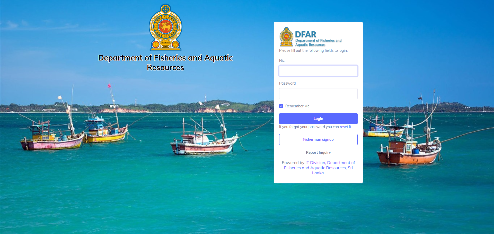
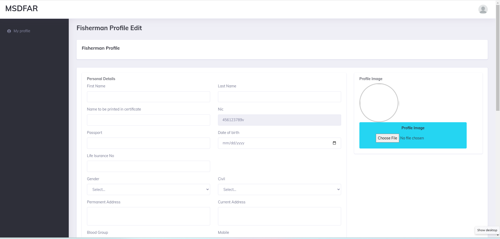
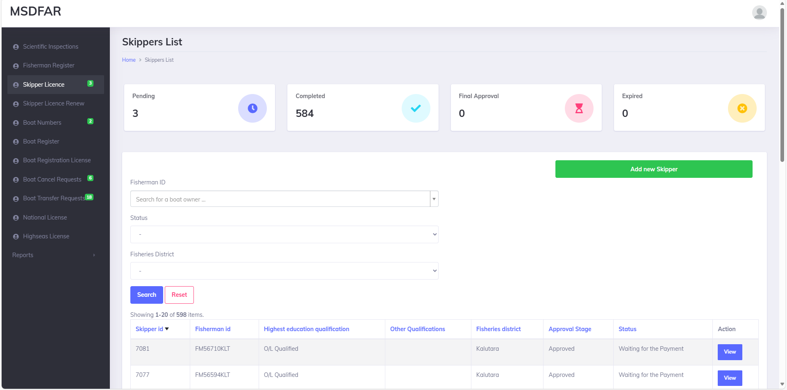
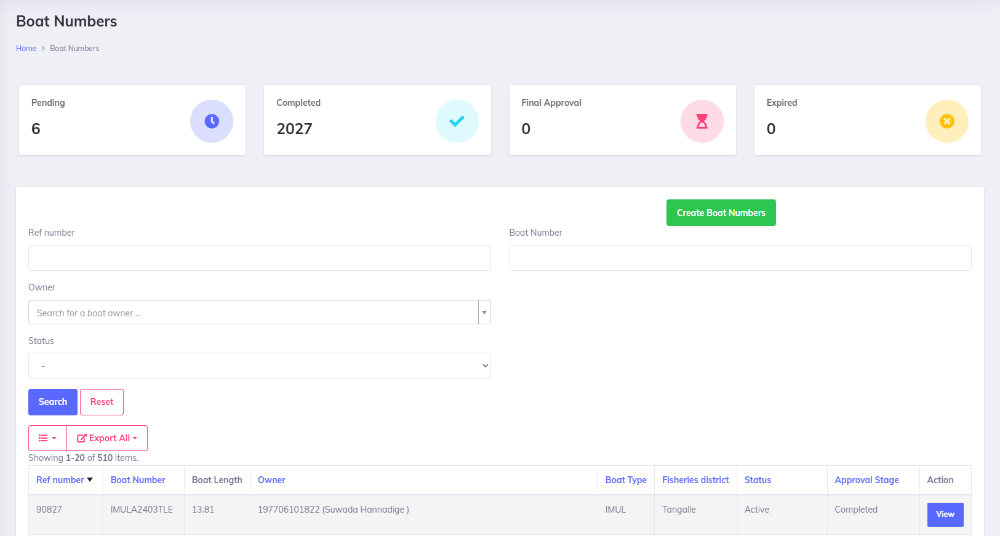
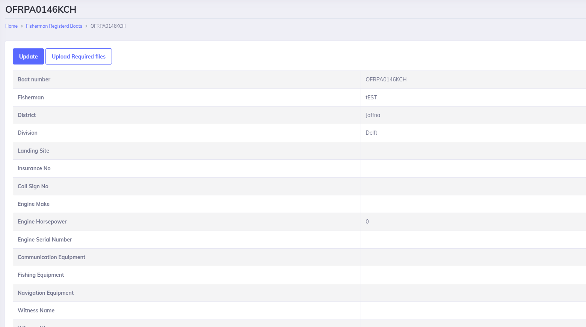
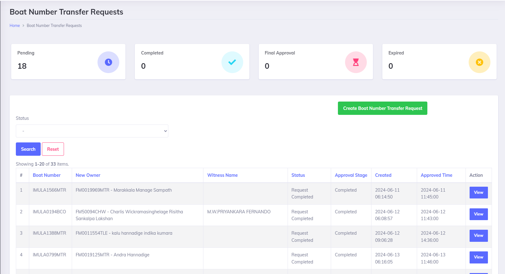
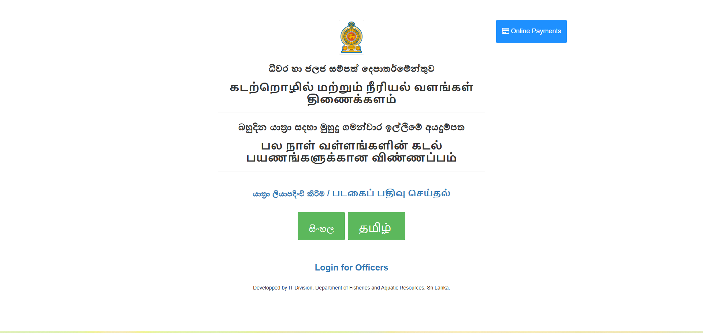

User Manual For MSDFAR
Management System Components
The following components are available in the Management System of Department of Fisheries and Aquatic
Resources:
- Scientific Inspections
- Fisherman Register
- Skipper License
- Skipper License Renew
- Boat Numbers
- Boat Register
- Boat Registration License
- Boat Cancel Requests
- National License
- High Seas License
- Division Gear Types
How to Login
- Browse Department of Fisheries and Aquatic Resources on Google
- Log in to the Web page
- Click on the Officer
- Click on MSDFAR
- Here it shows the Login Interface of the MSDFAR

[Image: MSDFAR Login Interface]
User Roles
- Director General
- Director Management
- Assistant Directors
- District Offices
- Fisheries Inspector
- District Fisheries Inspector
- Fisherman
- Administrators
1. Fisherman Registration
- Fisherman should sign up with the MSDFAR first
- Create username and password for the fisherman
- Log in to the system by providing username and password
- The following interface will appear
- Fisherman can himself enter his details and can register with the system by providing the following details:
- Name to be printed on the certificate
- Gender
- Passport
- Date of Birth
- ID (It will be already appeared in the system)
- Insurance Number
- Address
- Blood group
- Whether a member of the fishing society
- Fisheries details
- District and Division
- Category
- Recruitment Year and Management Area
- Then finally digital signature of the particular fisherman can be attached and click on the update button.

[Image: Fisherman Registration Interface]
DO NOT KEEP ANY FIELDS EMPTY ON THE INTERFACE
2. Skipper License
Filled by District Offices:
- Log in with District Office credentials
- The interface is as follows:
- Click on the button
- Select Fisherman ID and Highest Education Qualification
- Enter other Qualifications
- Select Fisheries Districts
- Select Fisheries Division
- Educational Qualifications:
- Select the Institute
- Select the Program name
- Enter the training period
- Select the Date Certified
- Click on Save (All the trainings will be displayed in a row)
- Form forwarded to District Fisheries Inspector for review
- District Fisheries Inspector reviews, checks for mistakes, uploads missing documents, and submits
- Form forwarded to Assistant Director (District Office) for approval
- Assistant Director approves
- Form forwarded to Director Management (Head Office) for approval
- Director Management approves
- Form forwarded to Director General for final approval
- After final approval, skipper pays and District Office uploads slip
- Temporary card issued; ID card given after one year

[Image: Skipper License Interface]
3. Skipper License Renewal
Renewed every 5 years following the same procedure as Skipper License.
4. Boat Numbers
Filled by District Offices:
- Log in with District Office credentials
- Click on Create Boat Numbers
- Enter/Search owner from drop-down list
- Select relevant yard, boat design, boat type
- Enter hull number, boat propelling details, Management Area
- Add remarks if needed
- Click Submit
- Form forwarded to District Fisheries Inspector for review
- Assistant Director approves
- Director General gives final approval

[Image: Boat Numbers Interface]
5. Boat Registration License
Filled by Fisheries Inspector (temporarily):
- Log in with Fisheries Inspector credentials
- Click on “Manage Profiles as Fisherman” (red tab)
- Click on Boat Registration
- Click on Apply
- Fill details and submit
- Form forwarded to Fisheries Inspector
- Search boat number and fisherman’s name on dashboard
- Upload necessary files
- Form forwarded through approval chain (DFI, Assistant Director, Director Management, Director General)

[Image: Fisheries Inspector Dashboard]
6. Boat Transfer Requests
Filled by District Office:
- Log in with District Officer credentials
- Click on Create Boat Number Transfer Request
- Fill details (boat number, owner, witness name, NIC, sign date, address, remarks)
- Click Apply
- Form forwarded through approval chain

[Image: Boat Transfer Interface]
7. Licenses
National Licenses
Reviewed by Fisheries Inspector, District Fisheries Inspector, and Assistant Director.
High Seas Licenses
Reviewed through full approval chain.
Note: Division Gear Types should be added before applying.
Manual For the Departure Approval System
Accessed via imul.online
Tasks
- Boat Registration
- Departure Cancellation
- Online Payment Portal
Steps
- Click on Login for Officers
- Enter username and password
- Home tab functionalities:
- Skippers
- Search VMS Code
- Approved List - All Island
- Departure Cancelled List
- VMS Payment
- Daily Reports

[Image: Departure Approval Home Tab]
1. Skippers Tab
Details: NIC, Name, Crew Type, Skipper ID, Address, Contact Number, Harbor, Status, Options (Remarks, Update,
History)

[Image: Skippers Tab]